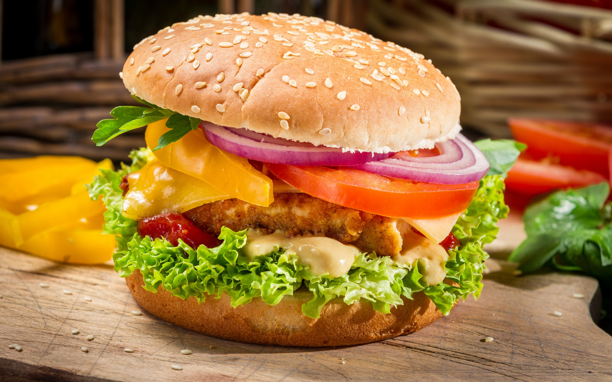

Burger

Description
A burger is a popular fast food consisting of a ground meat patty (usually beef) placed between two buns, often accompanied by lettuce, tomato, cheese, pickles, and condiments like ketchup and mustard. It’s a customizable and easy-to-eat meal loved worldwide.
Ingredients
- Burger buns
- Ground beef or chicken (or vegetarian patty)
- Cheese slices
- Lettuce leaves
- Tomato slices
- Onion slices
- Ketchup
- Mustard
- Salt and peppe
- Olive Oil or Butter
Steps
- Season the ground meat with salt and pepper, then form into burger patties.
- Heat olive oil or butter in a pan or grill and cook the patties for 4-5 minutes on each side, adding cheese in the last minute.
- Toast the burger buns lightly in the pan or oven.
- Assemble the burger by placing the cooked patty on the bottom bun, followed by lettuce, tomato, onions, and pickles.
- Add condiments like ketchup and mustard, then top with the other bun.
- Serve with fries or any sides you prefer.
Homepage